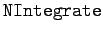
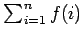
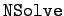
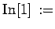
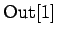
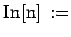
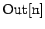
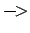

Inhalt Index DeskTop Bronstein

 Numerische Mathematik Nutzung von Computern Anwendung von Computeralgebrasystemen Mathematica
Numerische Mathematik Nutzung von Computern Anwendung von Computeralgebrasystemen Mathematica


Das Computeralgebrasystem Mathematica verfügt über einen mächtigen Apparat zur numerischen Lösung vielfältiger mathematischer Aufgaben. Die Vorgehensweise von Mathematica ist jedoch hierbei ganz anders als im Falle symbolischer Berechnungen. Mathematica ermittelt nach bestimmten, voreingestellten Prinzipien eine Werteliste der beteiligten Funktionen, ähnlich der für graphische Darstellungen, und bestimmt dann aus diesen Werten die jeweilige Lösung. Da die Anzahl der benutzten Punkte endlich sein muß, kann es bei ,,schlechten`` Funktionen zu Problemen kommen. Mathematica wird zwar auch hier versuchen, an problematischen Stellen mehr Stützpunkte zu wählen, aber schließlich muß es Annahmen über die Stetigkeit in bestimmten Bereichen machen. Hier kann die Ursache für Fehler im Resultat liegen. Es ist in jedem Fall sinnvoll, so viel wie möglich qualitative Informationen über die beteiligten Objekte einzuholen und, wenn irgend möglich, symbolische Berechnungen, zumindest in Teilbereichen der Aufgabe, durchzuführen.
In der folgenden Tabelle sind Operationen für die numerische Auswertung dargestellt:
|  | berechnet bestimmte Integrale |
| berechnet Summen  | |
| berechnet Produkte | |
|  | löst numerisch algebraische Gleichungen |
| löst Differentialgleichungen numerisch |
Nach dem Starten von Mathematica wird das ,,Prompt``  angezeigt, das die Bereitschaft für die Eingabe angibt. Die Ausgabe des zugehörigen Ergebnisses kennzeichnet Mathematica mit . Allgemein: Der Text wird in die ,mit  gekennzeichnet Zeilen eingegeben. Die Zeilen, die mit  versehen sind, gibt Mathematica als Antwort zurück. Der in den Ausdrücken auftretende Pfeil  bedeutet z.B. ersetze x durch den Wert  .
.